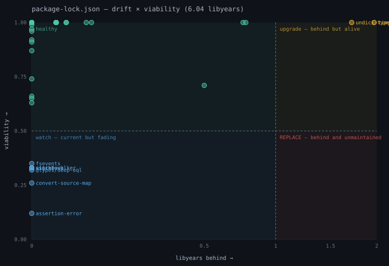

Dependency drift (libyears) + viability, plotted as a quadrant.
Measures how far behind your dependencies are — drift, in libyears — and whether you can ever catch up — viability: maintainer activity, bus factor, release cadence, archived status. A dependency 0.2 libyears behind whose sole maintainer vanished is more dangerous than one 4 libyears behind under active development. Reads SBOMs, lock files or manifests across npm, PyPI, Cargo, Composer and RubyGems.

git clone https://github.com/fabiocicerchia/depwatch
npm install && npm run build
node dist/cli.js check package.jsonthen: node dist/cli.js chart package.json --out q.svg # the quadrant above